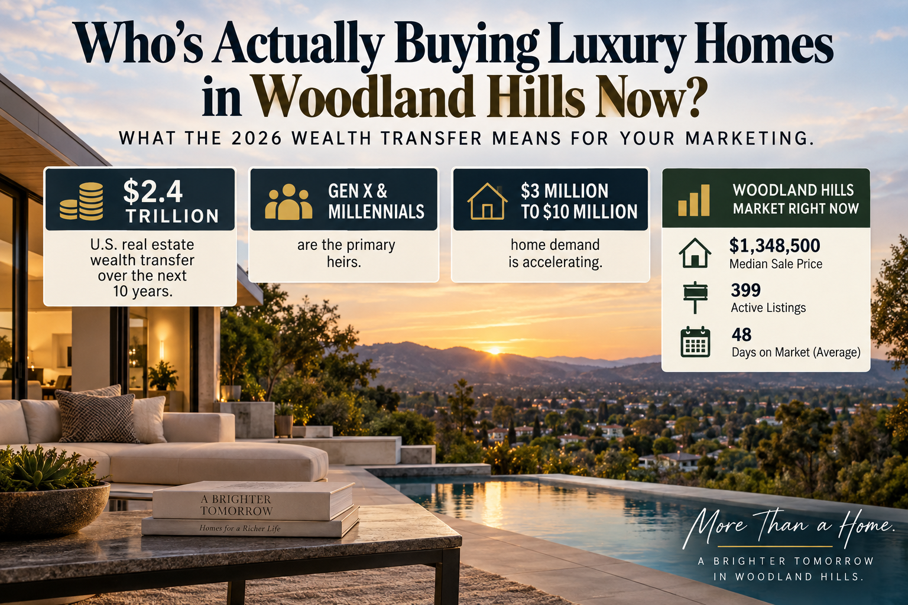

Who's Actually Buying Luxury Homes in Woodland Hills Now? What the 2026 Wealth Transfer Means for Your Marketing

If your Woodland Hills home is priced above $1 million, there's a real shift happening in who's actually looking at that listing, and most luxury marketing hasn't caught up to it yet.
The Buyer Pool Is Changing Faster Than the Marketing Playbook
Coldwell Banker Global Luxury's 2026 Trend Report, drawing on three years of luxury home sales data and a survey of more than 100 Coldwell Banker Global Luxury Property Specialists, found that Gen X and Millennials are set to inherit $4.6 trillion in global real estate wealth over the next 10 years. The United States is expected to capture 52% of that transfer, nearly $2.4 trillion in U.S. real estate changing hands over the next decade. Gen X is the primary near-term recipient of this wealth; Millennials are set to inherit the largest share over the long run.
This isn't a distant, theoretical trend. It's already reshaping who shows up to a showing. Individuals with $5 million to $30 million in net worth are driving 65.7% of U.S. property wealth transfers, and since 2020, investment in U.S. luxury real estate has grown 59.9% among buyers with more than $5 million in net worth, more than triple the growth rate seen among buyers in other countries.
Why "Nest Investing" Changes What Actually Sells a Luxury Home
The report identifies a real behavioral shift it calls "nest investing." Rather than splitting discretionary spending between real estate and personal luxury goods the way older generations often did, high-net-worth households are now weighting real estate more heavily. Home-related spending among households with $30 million or more in net worth is projected to outpace growth in personal luxury goods spending by 18.5%. Younger heirs, specifically, are allocating a larger share of their overall wealth to real estate than older generations did at the same stage.
That shift comes with a specific price-point signal worth paying attention to: demand for homes priced between $3 million and $10 million is accelerating, and buyers in this range are prioritizing wellness, space, quality, and long-term return, not status-driven purchases for their own sake.
What This Means for How a Woodland Hills Luxury Listing Actually Gets Marketed
The practical implication is straightforward, even if it cuts against how luxury marketing has traditionally worked. Marketing built entirely around "prestige," exclusivity for its own sake, or aspirational lifestyle imagery detached from how a home actually functions is increasingly aimed at a buyer profile that's aging out of the market. A younger, wealth-transfer buyer is evaluating a home the way they'd evaluate any other major asset: does it serve a real purpose in their life, does it hold long-term value, and does it reflect who they actually are rather than who a previous generation of luxury buyers wanted to appear to be.
That doesn't mean abandoning strong photography, video, or staging, the fundamentals still matter, as covered in whether staging and photography actually raise your price. It means the story wrapped around those assets needs to shift: from "look how impressive this is" to "here's how this home actually works for the way you live." A wellness-oriented home office, a functional multi-generational layout, energy efficiency, real indoor-outdoor living, these are the kinds of details a nest-investing buyer is actually weighing, more than a marble entryway or a wine cellar photographed for its own sake.
Where Woodland Hills Fits Into This Shift
Woodland Hills' current market sits at a $1,348,500 median sale price, with 399 active listings, 28 new, 73 already price-reduced, and a 48-day average days on market (Movoto, updated September 20, 2026). That puts much of the local luxury inventory at the lower end of the $3 million to $10 million range the report flags as accelerating in demand, and squarely in range of the buyer profile this report describes: someone earlier in a wealth transfer, evaluating real estate as a long-term asset and a functional home, not a status trophy. This connects directly to the earlier question of whether your home is even sized like a luxury listing by national benchmarks, since the buyer this report describes is evaluating function and value at every price point, not just size.
For a seller with a home priced above $1 million right now, the practical question isn't whether to spend more on marketing. It's whether the marketing that already exists is actually speaking to the buyer who's likely to walk through the door.
This is general market research, not a guarantee about any individual buyer or sale. Every listing and every buyer pool is different, and this data reflects national and global trends, not a Woodland Hills-specific survey.
Frequently Asked Questions
What is the Great Wealth Transfer the Coldwell Banker report describes?
It refers to the historic amount of wealth, an estimated $4.6 trillion globally in real estate alone, that's expected to pass from older generations to Gen X and Millennial heirs over the next 10 years, with the U.S. expected to capture 52% of that transfer.
Does this mean younger buyers are less interested in luxury homes?
No, the opposite. The report found demand for homes priced $3 million to $10 million is accelerating, and high-net-worth households are directing more of their spending toward real estate, not less. What's changing is what they value: wellness, functionality, and long-term return, more than status symbols.
What is "nest investing"?
It's the term the report uses for a shift where affluent households increasingly treat real estate as a core wealth strategy rather than splitting spending between real estate and personal luxury goods. Home-related spending among the wealthiest households is projected to grow faster than personal luxury goods spending.
Does this change apply to a home priced under $3 million?
The report's accelerating-demand data specifically covers the $3 million to $10 million range, but the underlying buyer behavior shift, valuing function and long-term value over status marketing, applies more broadly across the luxury segment, including homes closer to Woodland Hills' current $1,348,500 median.
Should I stop using traditional luxury marketing like professional photography or staging?
No. Those fundamentals still matter. What's changing is the story built around those assets: leading with how a home functions and supports a buyer's actual life, not just how impressive it looks.
How do I know if my current marketing is aimed at the right buyer?
That's worth a direct conversation about your specific listing, price point, and target buyer profile rather than a generic checklist, since the right approach depends heavily on your home's price range and features.
Have a Woodland Hills home priced above $1 million? Let's talk about whether your current marketing is actually built for who's buying now.
Or call (818) 934-7576.